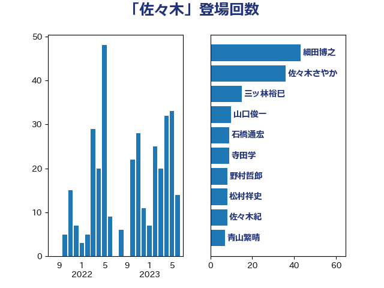

単語「佐々木」

| 細田博之 | 自由民主党 | 43 回 |
| 佐々木さやか | 公明党 | 36 回 |
| 三ッ林裕巳 | 自由民主党 | 15 回 |
| 山口俊一 | 自由民主党 | 10 回 |
| 石橋通宏 | 立憲民主党 | 9 回 |
| 寺田学 | 立憲民主党 | 9 回 |
| 野村哲郎 | 自由民主党 | 8 回 |
| 松村祥史 | 自由民主党 | 8 回 |
| 佐々木紀 | 自由民主党 | 8 回 |
| 青山繁晴 | 自由民主党 | 7 回 |
| 鈴木宗男 | 日本維新の会 | 6 回 |
| 末松信介 | 自由民主党 | 6 回 |
| 中曽根弘文 | 自由民主党 | 5 回 |
| 橋本岳 | 自由民主党 | 4 回 |
| 根本匠 | 自由民主党 | 4 回 |
| 山田宏 | 自由民主党 | 4 回 |
| 山東昭子 | 自由民主党 | 4 回 |
| 古屋範子 | 公明党 | 4 回 |
| 黄川田仁志 | 自由民主党 | 3 回 |
| 青島健太 | 日本維新の会 | 3 回 |
| 舩後靖彦 | れいわ新選組 | 3 回 |
| 海江田万里 | 立憲民主党 | 3 回 |
| 河野義博 | 公明党 | 3 回 |
| 杉久武 | 公明党 | 3 回 |
| 山井和則 | 立憲民主党 | 3 回 |
| 阿部知子 | 立憲民主党 | 2 回 |
| 鈴木俊一 | 自由民主党 | 2 回 |
| 谷田川元 | 立憲民主党 | 2 回 |
| 石川大我 | 立憲民主党 | 2 回 |
| 石井準一 | 自由民主党 | 2 回 |
| 矢倉克夫 | 公明党 | 2 回 |
| 牧原秀樹 | 自由民主党 | 2 回 |
| 池田佳隆 | 自由民主党 | 2 回 |
| 江藤拓 | 自由民主党 | 2 回 |
| 森本真治 | 立憲民主党 | 2 回 |
| 梅村みずほ | 日本維新の会 | 2 回 |
| 斎藤嘉隆 | 立憲民主党 | 2 回 |
| 徳永エリ | 立憲民主党 | 2 回 |
| 島村大 | 自由民主党 | 2 回 |
| 岩渕友 | 日本共産党 | 2 回 |
| 宮本徹 | 日本共産党 | 2 回 |
| 大野敬太郎 | 自由民主党 | 2 回 |
| 大西健介 | 立憲民主党 | 2 回 |
| 大島敦 | 立憲民主党 | 2 回 |
| 吉川沙織 | 立憲民主党 | 2 回 |
| 古賀篤 | 自由民主党 | 2 回 |
| ながえ孝子 | 無所属 | 2 回 |
| 鰐淵洋子 | 公明党 | 1 回 |
| 高良鉄美 | 無所属 | 1 回 |
| 高橋千鶴子 | 日本共産党 | 1 回 |
| 高橋克法 | 自由民主党 | 1 回 |
| 高木毅 | 自由民主党 | 1 回 |
| 馬場伸幸 | 日本維新の会 | 1 回 |
| 階猛 | 立憲民主党 | 1 回 |
| 関芳弘 | 自由民主党 | 1 回 |
| 長島昭久 | 自由民主党 | 1 回 |
| 鈴木馨祐 | 自由民主党 | 1 回 |
| 足立敏之 | 自由民主党 | 1 回 |
| 赤羽一嘉 | 公明党 | 1 回 |
| 谷合正明 | 公明党 | 1 回 |
| 西田実仁 | 公明党 | 1 回 |
| 西村智奈美 | 立憲民主党 | 1 回 |
| 葉梨康弘 | 自由民主党 | 1 回 |
| 芳賀道也 | 国民民主党 | 1 回 |
| 米山隆一 | 立憲民主党 | 1 回 |
| 笹川博義 | 自由民主党 | 1 回 |
| 竹谷とし子 | 公明党 | 1 回 |
| 竹内真二 | 公明党 | 1 回 |
| 稲田朋美 | 自由民主党 | 1 回 |
| 福重隆浩 | 公明党 | 1 回 |
| 福岡資麿 | 自由民主党 | 1 回 |
| 滝沢求 | 自由民主党 | 1 回 |
| 浮島智子 | 公明党 | 1 回 |
| 浅野哲 | 国民民主党 | 1 回 |
| 河西宏一 | 公明党 | 1 回 |
| 江田憲司 | 立憲民主党 | 1 回 |
| 永岡桂子 | 自由民主党 | 1 回 |
| 松木けんこう | 立憲民主党 | 1 回 |
| 東徹 | 日本維新の会 | 1 回 |
| 杉本和巳 | 日本維新の会 | 1 回 |
| 杉尾秀哉 | 立憲民主党 | 1 回 |
| 本村伸子 | 日本共産党 | 1 回 |
| 木原稔 | 自由民主党 | 1 回 |
| 斉藤鉄夫 | 公明党 | 1 回 |
| 後藤茂之 | 自由民主党 | 1 回 |
| 広瀬めぐみ | 自由民主党 | 1 回 |
| 岸田文雄 | 自由民主党 | 1 回 |
| 山田勝彦 | 立憲民主党 | 1 回 |
| 山下雄平 | 自由民主党 | 1 回 |
| 小里泰弘 | 自由民主党 | 1 回 |
| 小寺裕雄 | 自由民主党 | 1 回 |
| 宮内秀樹 | 自由民主党 | 1 回 |
| 塩崎彰久 | 自由民主党 | 1 回 |
| 塚田一郎 | 自由民主党 | 1 回 |
| 國重徹 | 公明党 | 1 回 |
| 和田政宗 | 自由民主党 | 1 回 |
| 吉田統彦 | 立憲民主党 | 1 回 |
| 勝部賢志 | 立憲民主党 | 1 回 |
| 佐藤信秋 | 自由民主党 | 1 回 |
| 伊藤孝恵 | 国民民主党 | 1 回 |
| 仁比聡平 | 日本共産党 | 1 回 |
| 中根一幸 | 自由民主党 | 1 回 |
| 一谷勇一郎 | 日本維新の会 | 1 回 |